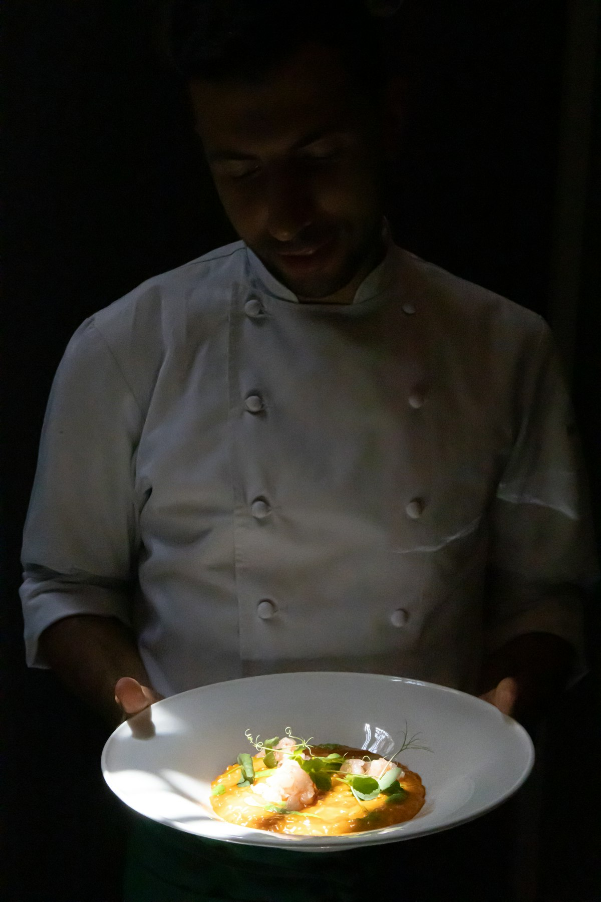
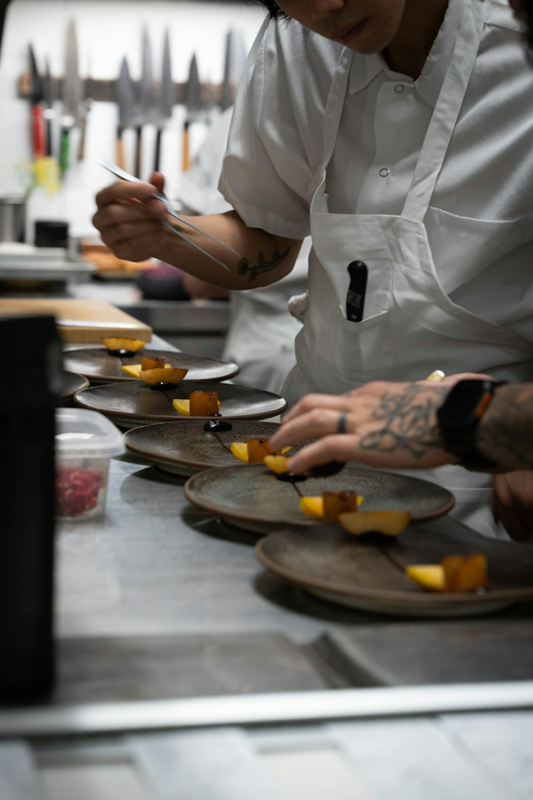
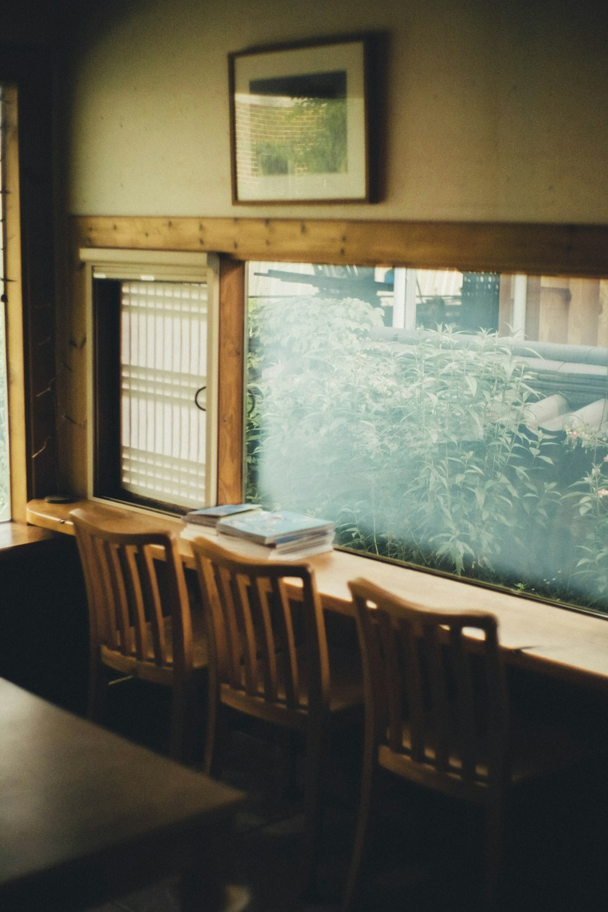
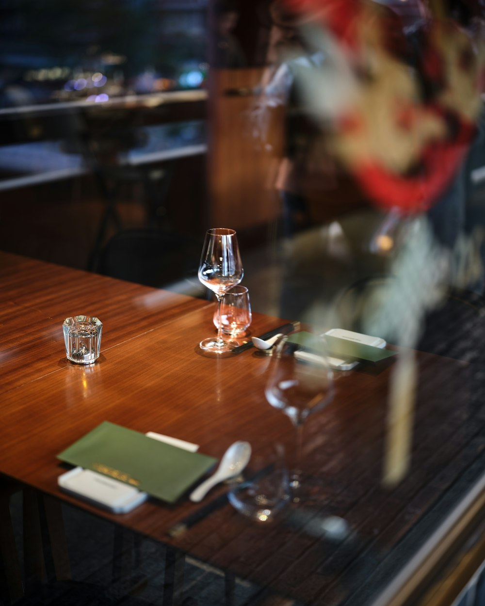

光 — 時間とともに変わる表情
窓際の席は、ランチとディナーで異なる光の色をまといます。昼は淡いレモン色の陽が差し込み、夜は間接照明が食卓をやわらかく照らします。同じ席でも、訪れる時間によって違う景色に出会えるのがTable de Lumièreの楽しみ方のひとつです。
Lumière du jour
窓から差し込む光と、旬の食材が語る季節。都内近郊の閑静な住宅街で、気取らないけれど本格的なフレンチをお楽しみいただけます。
Concept
Table de Lumièreは、窓辺に差し込む光の移ろいを何よりのごちそうと考える、小さなビストロです。仕入れによって表情を変える季節の食材を、その日いちばん美味しい形でお皿にのせています。畏まった作法は必要ありません。肩の力を抜いて、けれど手を抜かない一皿と向き合っていただく、それが私たちの本格フレンチです。カウンター越しにシェフの気配を感じながら、ゆっくりとした時間をお過ごしください。
Our Commitment

窓際の席は、ランチとディナーで異なる光の色をまといます。昼は淡いレモン色の陽が差し込み、夜は間接照明が食卓をやわらかく照らします。同じ席でも、訪れる時間によって違う景色に出会えるのがTable de Lumièreの楽しみ方のひとつです。
メニューは仕入れの状況に合わせて頻繁に見直しています。旬の野菜や魚介がいちばんおいしいタイミングを逃さないための工夫です。同じ料理でも、季節が変わればまったく違う一皿として楽しんでいただけます。
シェフ1名、ホール1名という小さな体制だからこそ、お客様との距離が自然と近くなります。かしこまりすぎず、けれど丁寧に。カウンター越しの会話も、Table de Lumièreの味のひとつです。

Chef
素材の声に耳を傾け、足し算よりも引き算で仕上げる料理を大切にしています。派手な演出よりも、光と食材そのものが持つ表情を活かすこと。それがシェフの一貫した考え方です。決して気負わず、でも一皿に込める手間は惜しまない。そんな姿勢で、日々厨房に立っています。
「その日いちばんいい食材と、その日いちばんいい光で。それだけを大切にしています。」
Interior

窓際の2人席 — 光の移ろいをいちばん近くで
シェフの手元が見えるカウンター席

静かな会話がよく似合う、小さなダイニング
夜はやわらかな灯りが食卓を包みます
Voice
★★★★★
記念日に伺いました。窓際の席から差し込む光がとても綺麗で、お料理も一皿ごとに季節を感じられて感動しました。シェフが気さくに話しかけてくださったのも嬉しかったです。
常連のお客様
★★★★★
ランチコースのコストパフォーマンスに驚きました。前菜からデザートまで丁寧に作られていて、平日なのに贅沢な時間を過ごせました。
平日ランチ利用のお客様
★★★★★
予約必須の人気店。少し席数が少なく待つこともありますが、それだけの価値はあります。特に魚料理が絶品でした。
ご近所にお住まいの方
★★★★★
ワインのペアリングをお願いしたら、料理との組み合わせが素晴らしく、ソムリエの方の説明も分かりやすかったです。
ワイン好きのお客様
★★★★★
一人でも入りやすい雰囲気で、カウンター席で調理の様子を眺めながら食事できるのが好きです。何度もリピートしています。
おひとりで来店されたお客様
Access & Reservation